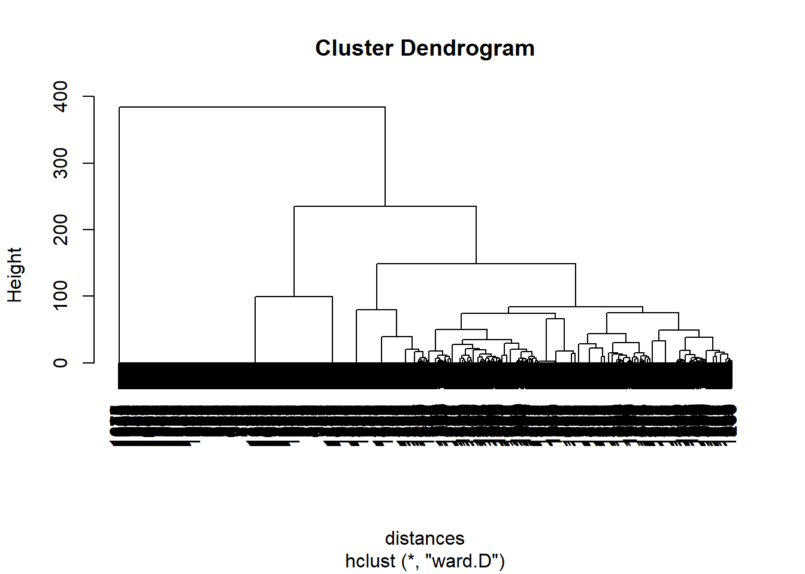
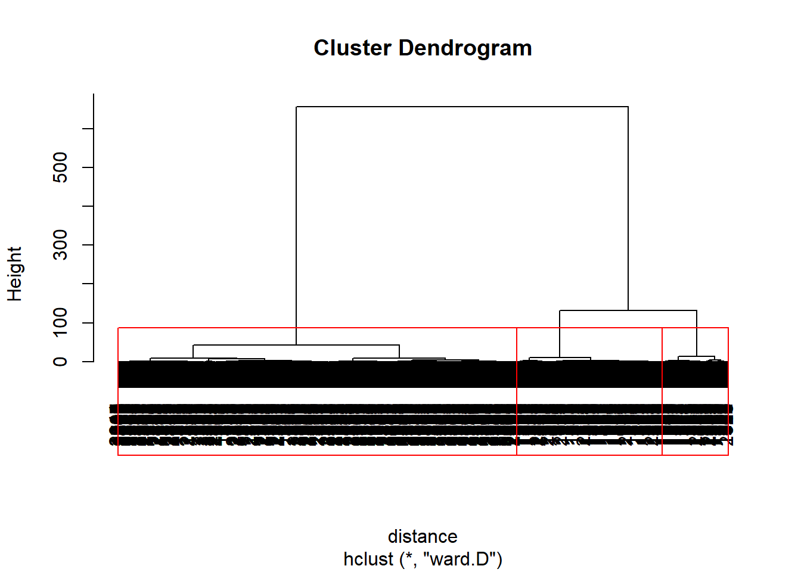
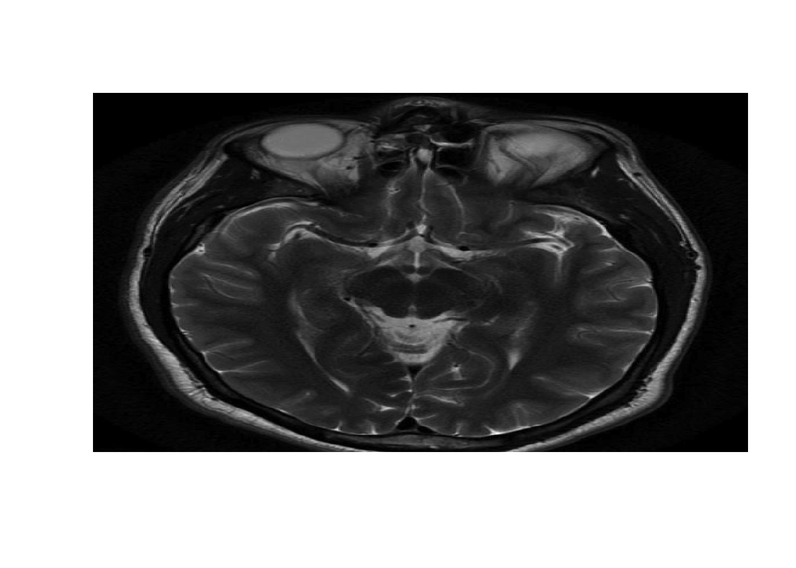
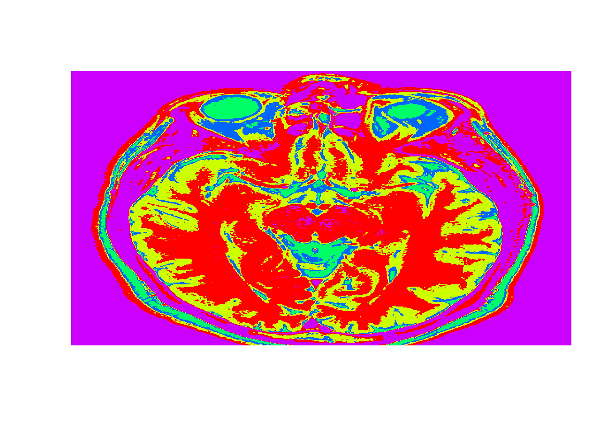
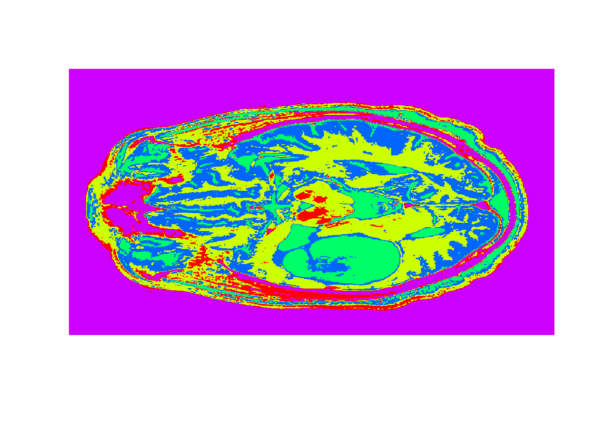
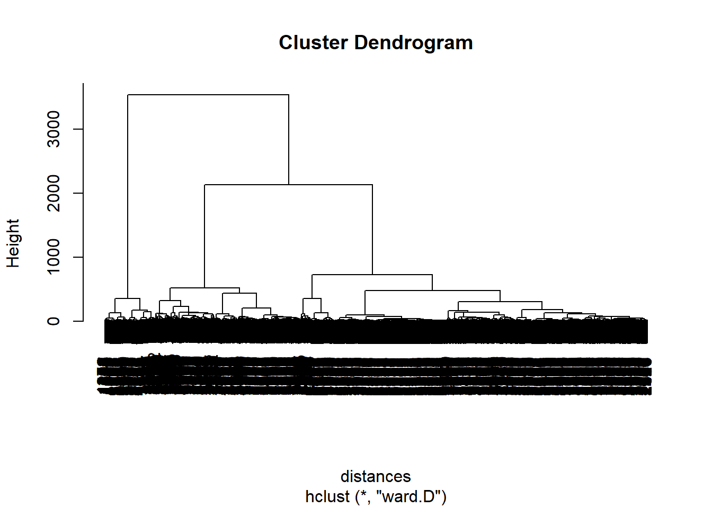
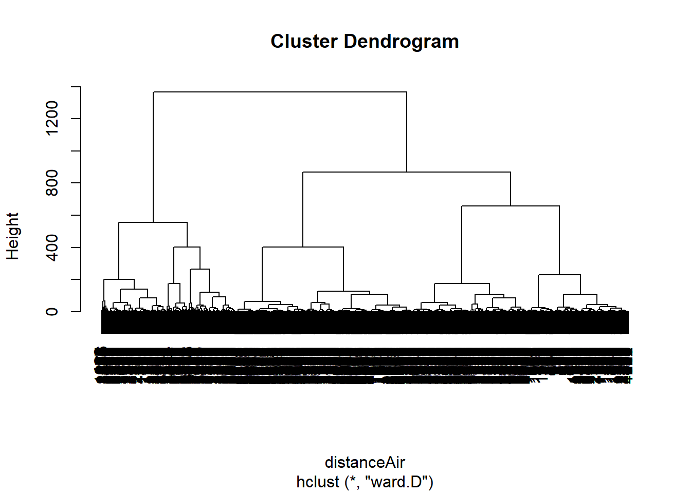

Unit 7 Clustering
7.1 Introduction to Clustering
#input text file
movies <- read.table("week6/movieLens.txt", header=FALSE, sep="|",quote="\"")
str(movies)## 'data.frame': 1682 obs. of 24 variables:
## $ V1 : int 1 2 3 4 5 6 7 8 9 10 ...
## $ V2 : Factor w/ 1664 levels "'Til There Was You (1997)",..: 1525 617 554 593 343 1318 1545 110 390 1240 ...
## $ V3 : Factor w/ 241 levels "","01-Aug-1997",..: 71 71 71 71 71 71 71 71 71 182 ...
## $ V4 : logi NA NA NA NA NA NA ...
## $ V5 : Factor w/ 1661 levels "","http://us.imdb.com/M/title-exact/Independence%20(1997)",..: 1431 565 505 543 310 1661 1453 103 357 1183 ...
## $ V6 : int 0 0 0 0 0 0 0 0 0 0 ...
## $ V7 : int 0 1 0 1 0 0 0 0 0 0 ...
## $ V8 : int 0 1 0 0 0 0 0 0 0 0 ...
## $ V9 : int 1 0 0 0 0 0 0 0 0 0 ...
...# Add column names
colnames(movies) <- c("ID", "Title", "ReleaseDate", "VideoReleaseDate", "IMDB", "Unknown", "Action", "Adventure", "Animation", "Childrens", "Comedy", "Crime", "Documentary", "Drama", "Fantasy", "FilmNoir", "Horror", "Musical", "Mystery", "Romance", "SciFi", "Thriller", "War", "Western")
str(movies)## 'data.frame': 1682 obs. of 24 variables:
## $ ID : int 1 2 3 4 5 6 7 8 9 10 ...
## $ Title : Factor w/ 1664 levels "'Til There Was You (1997)",..: 1525 617 554 593 343 1318 1545 110 390 1240 ...
## $ ReleaseDate : Factor w/ 241 levels "","01-Aug-1997",..: 71 71 71 71 71 71 71 71 71 182 ...
## $ VideoReleaseDate: logi NA NA NA NA NA NA ...
## $ IMDB : Factor w/ 1661 levels "","http://us.imdb.com/M/title-exact/Independence%20(1997)",..: 1431 565 505 543 310 1661 1453 103 357 1183 ...
## $ Unknown : int 0 0 0 0 0 0 0 0 0 0 ...
## $ Action : int 0 1 0 1 0 0 0 0 0 0 ...
## $ Adventure : int 0 1 0 0 0 0 0 0 0 0 ...
## $ Animation : int 1 0 0 0 0 0 0 0 0 0 ...
...# Remove unnecessary variables
movies$ID <- NULL
movies$ReleaseDate <- NULL
movies$VideoReleaseDate <- NULL
movies$IMDB <- NULL
# Remove duplicates
movies <- unique(movies)7.1.1 Heirarchical Clustering
#Heirarchical Clustering in R
#Cluster on genre variables not title
distances <- dist(movies[2:20], method= "euclidian") #Use euclidian distance
clusterMovies <- hclust(distances, method = "ward.D") #The ward method cares about the distance between clusters using centroid distance, and also the variance in each of the clusters.
plot(clusterMovies)
## 1 2 3 4 5 6
## 1 2 3 1 3 4## 1 2 3 4 5 6 7 8
## 0.1784512 0.7839196 0.1238532 0.0000000 0.0000000 0.1015625 0.0000000 0.0000000
## 9 10
## 0.0000000 0.0000000## 1 2 3 4 5 6 7
## 0.10437710 0.04522613 0.03669725 0.00000000 0.00000000 1.00000000 1.00000000
## 8 9 10
## 0.00000000 0.00000000 0.00000000## Title Unknown Action Adventure Animation Childrens Comedy
## 257 Men in Black (1997) 0 1 1 0 0 1
## Crime Documentary Drama Fantasy FilmNoir Horror Musical Mystery Romance
## 257 0 0 0 0 0 0 0 0 0
## SciFi Thriller War Western
## 257 1 0 0 0## 257
## 2# Create a new data set with just the movies from cluster 2
cluster2 <- subset(movies, clusterGroups==2)
# Look at the first 10 titles in this cluster:
cluster2$Title[1:20]## [1] GoldenEye (1995)
## [2] Bad Boys (1995)
## [3] Apollo 13 (1995)
## [4] Net, The (1995)
## [5] Natural Born Killers (1994)
## [6] Outbreak (1995)
## [7] Stargate (1994)
## [8] Fugitive, The (1993)
## [9] Jurassic Park (1993)
## [10] Robert A. Heinlein's The Puppet Masters (1994)
...#An advanced approach to finding cluster centroids
cG <- cutree(clusterMovies, k = 2) #only 2 clusters
spl <- split(movies[2:20], cG)#Split movies by cluster groups
lapply(spl, colMeans)## $`1`
## Unknown Action Adventure Animation Childrens Comedy
## 0.001545595 0.192426584 0.102782071 0.032457496 0.092735703 0.387944359
## Crime Documentary Drama Fantasy FilmNoir Horror
## 0.082689335 0.038639876 0.267387944 0.017001546 0.018547141 0.069551777
## Musical Mystery Romance SciFi Thriller War
## 0.043276662 0.046367852 0.188562597 0.077279753 0.191653787 0.054868624
## Western
## 0.020865533
##
...7.2 Recitation - Segmenting Images
7.2.1 Flower Image
flower <- read.csv("week6/flower.csv", header = F)
flowerMatrix <- as.matrix(flower)
flowerVector <- as.vector(flowerMatrix) #convert to vector to calculate euclidian distances for clustering
distance <- dist(flowerVector, method = "euclidean")
# Hierarchical clustering
clusterIntensity <- hclust(distance, method="ward.D")#ward method is minimum variance method.
plot(clusterIntensity)
# Select 3 clusters
rect.hclust(clusterIntensity, k = 3, border = "red")
## 1 2 3
## 0.08574315 0.50826255 0.931477137.2.2 MRI Image
healthy <- read.csv("week6/healthy.csv", header = F)
healthyMatrix <- as.matrix(healthy)
#Plot image
image(healthyMatrix,axes=FALSE,col=grey(seq(0,1,length=256)))
7.2.3 K-Means Clustering
#K-means clustering
k<-5
set.seed(1)
KMC <- kmeans(healthyVector, centers = k, iter.max = 1000)
str(KMC)## List of 9
## $ cluster : int [1:365636] 5 5 5 5 5 5 5 5 5 5 ...
## $ centers : num [1:5, 1] 0.1166 0.2014 0.4914 0.3299 0.0219
## ..- attr(*, "dimnames")=List of 2
## .. ..$ : chr [1:5] "1" "2" "3" "4" ...
## .. ..$ : NULL
## $ totss : num 5775
## $ withinss : num [1:5] 65.9 54.4 81.1 47.4 53.3
## $ tot.withinss: num 302
## $ betweenss : num 5473
...# Extract clusters
healthyClusters <- KMC$cluster
# Plot the image with the clusters
dim(healthyClusters) <- c(nrow(healthyMatrix), ncol(healthyMatrix))# set dimensions
image(healthyClusters, axes = FALSE, col=rainbow(k))
#Detecting Tumors
tumor <- read.csv("week6/tumor.csv", header=FALSE)
tumorMatrix <- as.matrix(tumor)
tumorVector <- as.vector(tumorMatrix)
#Apply clusters
library(flexclust)
KMC.kcca <- as.kcca(KMC, healthyVector)#convert to kcca object
tumorClusters <- predict(KMC.kcca, newdata = tumorVector)
# Visualize the clusters
dim(tumorClusters) <- c(nrow(tumorMatrix), ncol(tumorMatrix))
image(tumorClusters, axes = FALSE, col=rainbow(k))
7.3 Assignment
7.3.1 Part 1 - Document Clustering with Daily Kos
7.3.1.1 Problem 1 - Hierarchical Clustering
## 'data.frame': 3430 obs. of 1545 variables:
## $ abandon : int 0 0 0 0 0 0 0 0 0 0 ...
## $ abc : int 0 0 0 0 0 0 0 0 0 0 ...
## $ ability : int 0 0 0 0 0 0 0 0 0 0 ...
## $ abortion : int 0 0 0 0 0 0 0 0 0 0 ...
## $ absolute : int 0 0 0 0 0 0 0 0 0 0 ...
## $ abstain : int 0 0 1 0 0 0 0 0 0 0 ...
## $ abu : int 0 0 0 0 0 0 0 0 0 0 ...
## $ abuse : int 0 0 0 0 0 0 0 0 0 0 ...
## $ accept : int 0 0 0 0 0 0 0 0 0 0 ...
...distances <- dist(dailyKos, method= "euclidian")
clusterKos <- hclust(distances, method = "ward.D")
plot(clusterKos)
#1.4 Use the cutree function to split your data into 7 clusters.; How many observations are in cluster 3?
clusterGroups <- cutree(clusterKos, k = 7)
spl <- split(dailyKos, clusterGroups)#Split movies by cluster groups
lapply(spl, nrow)## $`1`
## [1] 1266
##
## $`2`
## [1] 321
##
## $`3`
## [1] 374
##
## $`4`
...#1.5 look at the top 6 words in each cluster
#sort - orders in increasing value; tail - last 6 values
f <- function(x){
tail(sort(colMeans(x)))
}
lapply(spl, f)## $`1`
## state republican poll democrat kerry bush
## 0.7575039 0.7590837 0.9036335 0.9194313 1.0624013 1.7053712
##
## $`2`
## bush democrat challenge vote poll november
## 2.847352 2.850467 4.096573 4.398754 4.847352 10.339564
##
## $`3`
## elect parties state republican democrat bush
...7.3.1.2 Problem 2 - K-Means Clustering
## List of 9
## $ cluster : int [1:3430] 4 4 2 4 1 4 3 4 4 4 ...
## $ centers : num [1:7, 1:1545] 0.0333 0.0152 0.03 0.0138 0.0556 ...
## ..- attr(*, "dimnames")=List of 2
## .. ..$ : chr [1:7] "1" "2" "3" "4" ...
## .. ..$ : chr [1:1545] "abandon" "abc" "ability" "abortion" ...
## $ totss : num 896461
## $ withinss : num [1:7] 77738 77220 75280 245827 53122 ...
## $ tot.withinss: num 730614
## $ betweenss : num 165847
...## $`1`
## [1] 150
##
## $`2`
## [1] 329
##
## $`3`
## [1] 300
##
## $`4`
...## $`1`
## time iraq kerry administration presided
## 1.586667 1.640000 1.653333 2.620000 2.726667
## bush
## 11.333333
##
## $`2`
## democrat bush challenge vote poll november
## 2.899696 2.960486 4.121581 4.446809 4.872340 10.370821
##
...7.3.2 Part 2 - Market Segmentation for Airlines
7.3.2.1 Problem 1 - Normalizing the Data
## Balance QualMiles BonusMiles BonusTrans
## Min. : 0 Min. : 0.0 Min. : 0 Min. : 0.0
## 1st Qu.: 18528 1st Qu.: 0.0 1st Qu.: 1250 1st Qu.: 3.0
## Median : 43097 Median : 0.0 Median : 7171 Median :12.0
## Mean : 73601 Mean : 144.1 Mean : 17145 Mean :11.6
## 3rd Qu.: 92404 3rd Qu.: 0.0 3rd Qu.: 23801 3rd Qu.:17.0
## Max. :1704838 Max. :11148.0 Max. :263685 Max. :86.0
## FlightMiles FlightTrans DaysSinceEnroll
## Min. : 0.0 Min. : 0.000 Min. : 2
## 1st Qu.: 0.0 1st Qu.: 0.000 1st Qu.:2330
...#1.3 In the normalized data, which variable has the largest maximum value?
preproc <- preProcess(airlines) #pre process data
airlinesNorm <- predict(preproc, airlines)
summary(airlinesNorm)## Balance QualMiles BonusMiles BonusTrans
## Min. :-0.7303 Min. :-0.1863 Min. :-0.7099 Min. :-1.20805
## 1st Qu.:-0.5465 1st Qu.:-0.1863 1st Qu.:-0.6581 1st Qu.:-0.89568
## Median :-0.3027 Median :-0.1863 Median :-0.4130 Median : 0.04145
## Mean : 0.0000 Mean : 0.0000 Mean : 0.0000 Mean : 0.00000
## 3rd Qu.: 0.1866 3rd Qu.:-0.1863 3rd Qu.: 0.2756 3rd Qu.: 0.56208
## Max. :16.1868 Max. :14.2231 Max. :10.2083 Max. : 7.74673
## FlightMiles FlightTrans DaysSinceEnroll
## Min. :-0.3286 Min. :-0.36212 Min. :-1.99336
## 1st Qu.:-0.3286 1st Qu.:-0.36212 1st Qu.:-0.86607
...7.3.2.2 Problem 2 - Hierarchical Clustering
distanceAir <- dist(airlinesNorm, method= "euclidian")
clusterAir <- hclust(distanceAir, method = "ward.D")
plot(clusterAir)
#2.2 - How many data points are in Cluster 1?
clusterGroupsAir <- cutree(clusterAir, k = 5)
spl <- split(airlines, clusterGroupsAir)#Split movies by cluster groups
lapply(spl, nrow)## $`1`
## [1] 776
##
## $`2`
## [1] 519
##
## $`3`
## [1] 494
##
## $`4`
...## $`1`
## Balance QualMiles BonusMiles BonusTrans FlightMiles
## 5.786690e+04 6.443299e-01 1.036012e+04 1.082345e+01 8.318428e+01
## FlightTrans DaysSinceEnroll
## 3.028351e-01 6.235365e+03
##
## $`2`
## Balance QualMiles BonusMiles BonusTrans FlightMiles
## 1.106693e+05 1.065983e+03 2.288176e+04 1.822929e+01 2.613418e+03
## FlightTrans DaysSinceEnroll
...7.3.2.3 Problem 3 - K-Means Clustering
## List of 9
## $ cluster : int [1:3999] 4 4 4 4 1 4 1 4 3 1 ...
## $ centers : num [1:5, 1:7] 0.787 0.401 1.172 -0.161 -0.352 ...
## ..- attr(*, "dimnames")=List of 2
## .. ..$ : chr [1:5] "1" "2" "3" "4" ...
## .. ..$ : chr [1:7] "Balance" "QualMiles" "BonusMiles" "BonusTrans" ...
## $ totss : num 27986
## $ withinss : num [1:5] 4440 704 3571 2422 2374
## $ tot.withinss: num 13511
## $ betweenss : num 14475
...#3.1 - How many clusters have more than 1,000 observations?
splK <- split(airlines, KMCAir$cluster)
lapply(splK, nrow)## $`1`
## [1] 776
##
## $`2`
## [1] 57
##
## $`3`
## [1] 143
##
## $`4`
...## Balance QualMiles BonusMiles BonusTrans FlightMiles FlightTrans
## 1 0.7866778 -0.08547306 1.40214847 1.01145492 0.01417749 0.02211363
## 2 0.4009981 6.97876620 0.08495883 0.07250717 0.34260322 0.38252097
## 3 1.1722573 0.42324832 0.66036647 1.74459327 3.78734636 4.05877606
## 4 -0.1606061 -0.11505046 -0.34731771 -0.26038231 -0.17602747 -0.19180853
## 5 -0.3517815 -0.14183200 -0.43059094 -0.41272355 -0.20026359 -0.21576712
## DaysSinceEnroll
## 1 0.3859187
## 2 -0.1193065
## 3 0.2652869
...7.3.3 Part 3 - Predicting Stock Returns with Cluster-Then-Predict
7.3.3.1 Problem 1 - Exploring the Dataset
#1.1
stocks <- read.csv("week6/StocksCluster.csv", stringsAsFactors=FALSE)
#1.2, 1.3, 1.4
summary(stocks)## ReturnJan ReturnFeb ReturnMar
## Min. :-0.7616205 Min. :-0.690000 Min. :-0.712994
## 1st Qu.:-0.0691663 1st Qu.:-0.077748 1st Qu.:-0.046389
## Median : 0.0009965 Median :-0.010626 Median : 0.009878
## Mean : 0.0126316 Mean :-0.007605 Mean : 0.019402
## 3rd Qu.: 0.0732606 3rd Qu.: 0.043600 3rd Qu.: 0.077066
## Max. : 3.0683060 Max. : 6.943694 Max. : 4.008621
## ReturnApr ReturnMay ReturnJune
## Min. :-0.826503 Min. :-0.92207 Min. :-0.717920
## 1st Qu.:-0.054468 1st Qu.:-0.04640 1st Qu.:-0.063966
...7.3.3.2 Problem 2 - Initial Logistic Regression Model
#2.1 - What is the overall accuracy on the training set, using a threshold of 0.5?
set.seed(144)
splitStocks <- sample.split(stocks$PositiveDec, SplitRatio = 0.7)
stocksTrain <- subset(stocks, splitStocks == TRUE)
stocksTest <- subset(stocks, splitStocks == FALSE)
StocksModel <- glm(PositiveDec ~ ., data =stocksTrain, family = "binomial" )
stocksLogPrediction <- predict(StocksModel, type="response")
table(stocksTrain$PositiveDec, stocksLogPrediction > 0.5)##
## FALSE TRUE
## 0 990 2689
## 1 787 3640## [1] 0.5711818#2.2Now obtain test set predictions from StocksModel. What is the overall accuracy of the model on the test, again using a threshold of 0.5?
stocksLogPrediction <- predict(StocksModel, newdata = stocksTest, type="response")
table(stocksTest$PositiveDec, stocksLogPrediction > 0.5)##
## FALSE TRUE
## 0 417 1160
## 1 344 1553## [1] 0.56706977.3.3.3 Problem 3 - Clustering Stocks
#3.1Why do we need to remove the dependent variable in the clustering phase of the cluster-then-predict methodology?
#Ans - Thats the variable we're trying to predict
limitedTrain <- stocksTrain
limitedTrain$PositiveDec <- NULL
limitedTest <- stocksTest
limitedTest$PositiveDec <- NULL
#3.3
preproc <- preProcess(limitedTrain)
normTrain <- predict(preproc, limitedTrain)#normalize Train data
normTest <- predict(preproc, limitedTest)#normalize Test data
summary(normTest)## ReturnJan ReturnFeb ReturnMar ReturnApr
## Min. :-3.743836 Min. :-3.251044 Min. :-4.07731 Min. :-4.47865
## 1st Qu.:-0.485690 1st Qu.:-0.348951 1st Qu.:-0.40662 1st Qu.:-0.51121
## Median :-0.066856 Median :-0.006860 Median :-0.05674 Median :-0.11414
## Mean :-0.000419 Mean :-0.003862 Mean : 0.00583 Mean :-0.03638
## 3rd Qu.: 0.357729 3rd Qu.: 0.264647 3rd Qu.: 0.35653 3rd Qu.: 0.32742
## Max. : 8.412973 Max. : 9.552365 Max. : 9.00982 Max. : 6.84589
## ReturnMay ReturnJune ReturnJuly ReturnAug
## Min. :-5.84445 Min. :-4.73628 Min. :-5.201454 Min. :-4.62097
## 1st Qu.:-0.43819 1st Qu.:-0.44968 1st Qu.:-0.512039 1st Qu.:-0.51546
...## ReturnJan ReturnFeb ReturnMar ReturnApr
## Min. :-4.57682 Min. :-3.43004 Min. :-4.54609 Min. :-5.0227
## 1st Qu.:-0.48271 1st Qu.:-0.35589 1st Qu.:-0.40758 1st Qu.:-0.4757
## Median :-0.07055 Median :-0.01875 Median :-0.05778 Median :-0.1104
## Mean : 0.00000 Mean : 0.00000 Mean : 0.00000 Mean : 0.0000
## 3rd Qu.: 0.35898 3rd Qu.: 0.25337 3rd Qu.: 0.36106 3rd Qu.: 0.3400
## Max. :18.06234 Max. :34.92751 Max. :24.77296 Max. :14.6959
## ReturnMay ReturnJune ReturnJuly ReturnAug
## Min. :-4.96759 Min. :-4.82957 Min. :-5.19139 Min. :-5.60378
## 1st Qu.:-0.43045 1st Qu.:-0.45602 1st Qu.:-0.51832 1st Qu.:-0.47163
...#3.4 Run k-means clustering with 3 clusters on normTrain; Which cluster has the largest number of observations?
set.seed(144)
km <- kmeans(normTrain, centers = 3)
splitTrain <- split(normTrain, km$cluster)
lapply(splitTrain, nrow) #Ans - Cluster 2## $`1`
## [1] 2479
##
## $`2`
## [1] 4731
##
## $`3`
## [1] 896#3.5
km.kcca <- as.kcca(km, normTrain)
clusterTrain <- predict(km.kcca)
clusterTest <- predict(km.kcca, newdata=normTest)
table(clusterTest)## clusterTest
## 1 2 3
## 1058 2029 3877.3.3.4 Problem 4 - Cluster-Specific Predictions
#4.1 - Which training set data frame has the highest average value of the dependent variable?
trainList <- split(stocksTrain, clusterTrain)
testList <- split(stocksTest, clusterTest)
lapply(trainList, colMeans)## $`1`
## ReturnJan ReturnFeb ReturnMar ReturnApr ReturnMay ReturnJune
## -0.06884016 -0.05313853 0.05623781 0.09255203 0.08198363 -0.04521849
## ReturnJuly ReturnAug ReturnSep ReturnOct ReturnNov PositiveDec
## 0.11018728 0.02208732 -0.01220414 -0.05505619 -0.01892736 0.61032674
##
## $`2`
## ReturnJan ReturnFeb ReturnMar ReturnApr ReturnMay
## 0.0251634954 0.0350812572 -0.0002492554 -0.0178523286 -0.0067017781
## ReturnJune ReturnJuly ReturnAug ReturnSep ReturnOct
...#4.2 -
fmod <- function(x){
glm(PositiveDec ~ ., data = x, family = "binomial")
}
trainModelList <- lapply(trainList, fmod)
lapply(trainModelList, summary)## $`1`
##
## Call:
## glm(formula = PositiveDec ~ ., family = "binomial", data = x)
##
## Deviance Residuals:
## Min 1Q Median 3Q Max
## -2.7220 -1.2879 0.8679 1.0096 1.7170
##
## Coefficients:
...fpredict <- function(modelInput, newdataInput){
predict(modelInput, type = "response", newdata =newdataInput )
}
predList <- mapply(fpredict, trainModelList, testList)
str(predList[[1]])## Named num [1:1058] 0.638 0.54 0.49 0.589 0.531 ...
## - attr(*, "names")= chr [1:1058] "5" "29" "67" "86" ...##
## FALSE TRUE
## 0 43 350
## 1 26 639## [1] 0.6194145##
## FALSE TRUE
## 0 277 719
## 1 221 812## [1] 0.5504808##
## FALSE TRUE
## 0 119 69
## 1 76 123## [1] 0.6458333AllPredictions <- c(predList[[1]],predList[[2]],predList[[3]])
AllOutcomes <- do.call("rbind",testList)
table(AllOutcomes$PositiveDec ,AllPredictions > 0.5)##
## FALSE TRUE
## 0 439 1138
## 1 323 1574## [1] 0.5788716